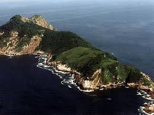
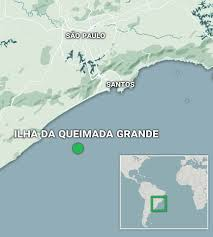
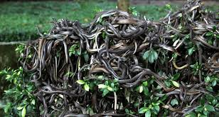
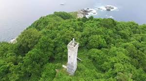

SNAKE ISLAND
ILHA DA QUEIMADA GRANDE

Introduction
Ilha da Queimada Grande, or "Snake Island," is known as an extremely isolated and dangerous area. The island is located 35 kilometers off the coast of São Paulo State, Brazil (at coordinates: $24^{\circ}29\prime S \ 46^{\circ}40\prime W$). Its total area is only 43 hectares (approximately 430,000 square meters). The estimated population of the venomous Golden Lancehead vipers (Bothrops insularis) ranges between 2,000 and 4,000 snakes, meaning a density rate of 1 to 5 golden vipers per square meter of the island's area.

History

Ilha da Queimada Grande (Snake Island) is characterized by its partially barren rock formations, a direct consequence of deforestation which serves as the etymological origin of the island's name. The Portuguese term "queimada" translates to "forest fire," referencing the historical attempts by local inhabitants to clear the land via burning for the purpose of establishing a banana plantation. To enhance maritime safety, a lighthouse was constructed in 1909 to steer vessels away from the island, and the last human residents departed when the facility was automated in the 1920s.
About 11,000 years ago, Ilha da Queimada Grande was connected to the mainland. When the sea level rose after the end of the Ice Age, the island became isolated from the continent, trapping the Golden Lancehead vipers without natural predators. Due to the reliance of these snakes on migratory birds as their primary food source—instead of the mammals found on the mainland—their venom evolved to be significantly stronger and faster-acting to ensure the immediate killing of airborne prey before it could escape, resulting in the high density and danger level observed today.

During the period spanning the 16th to the 19th centuries, Snake Island (Ilha da Queimada Grande) had a manual lighthouse operated by a family of 3 to 4 people. However, the most famous officially documented story recounts the tragedy of the last lighthouse keeper, where he, his wife, and their young daughter were all killed by snake bites after the vipers entered through the windows at night. Following this incident, the lighthouse on the island was closed and converted to operate fully automatically.
1909–1920: The Brazilian government attempted to grow bananas on the island to take advantage of the fertile soil, but failed miserably; the workers either died or fled.
Since approximately 1930: The Brazilian Navy has strictly prohibited approaching, imposing a fine of up to $150,000 and imprisonment on anyone attempting to land without authorization.
Theories
The most common legend (documented in old Brazilian folklore and publications like Discover Magazine and Medium) is that pirates in the 16th–18th centuries deliberately brought venomous snakes to the island to protect a treasure of gold or jewels buried there. They say the government prohibits visits not only because of the snakes, but also to hide the treasure, which might be linked to famous pirates like Henry Morgan or even Spanish treasures from the colonial era. This theory is popularized on YouTube channels about "lost treasures" and is considered "alternative history" because it rejects the scientific explanation (the island's separation from the mainland 11,000 years ago).

"Golden Lancehead Viper" (scientifically known as Bothrops insularis) is a rare species of venomous snake that lives exclusively on Queimada Grande Island (known as "Snake Island") off the coast of Sao Paulo in Brazil.
On some Brazilian YouTube channels, it is claimed that golden lancehead snakes are not entirely natural, but rather the result of Cold War military experiments (possibly with the CIA) to create a biological weapon. They say that the extremely potent venom (five times stronger than that of ordinary snakes) is evidence of genetic engineering, and that the ban was intended to conceal secret laboratories beneath the island or in caves. This extends to broader theories about "hidden biological weapons" in restricted locations.
A theory suggests that the presence of snakes on Ilha da Queimada Grande is merely an excuse, and that they are not the real reason for the complete closure of the island. Proponents of this theory claim that the snake population is not as massive as reported, raising questions like: "Why aren't even trained tourists or open scientific tours allowed access?". The recurring statement summarizing these doubts is: "Governments do not close an entire island just because of animals."
The theory surrounding the closure of Snake Island (Ilha da Queimada Grande) claims that the real reason for the closure is the presence of "hidden secret facilities," not just the snakes. These facilities allegedly include underground buildings, concrete structures camouflaged with vegetation, remnants of ancient bases, and structures near the lighthouse that are not visible in public photographs. The theory further claims that satellite images are "deliberately blurred," and that tourist photography angles are "limited and selective." The theory concludes that "the lighthouse is not a lighthouse... it's a cover [for something else]."
One of the most widespread narratives regarding the closure of Snake Island (Ilha da Queimada Grande) is the claim that the island is, in fact, a natural biological laboratory. It is alleged that the government or secret entities conduct venom experiments, neuro-agent development, and research into the evolution of isolated species there. Proponents of this theory base their claims on the idea that the Golden Lancehead venom is "stronger than natural" and that its evolution was "too fast to be natural." They also assert that the research on the island is not limited to civilian scientists, but involves military scientists.
Some link it to South American myths about "snake gods" (such as Quetzalcoatl in the Mayan/Aztec civilizations), claiming it was an ancient site of worship for divine snakes, and that modern snakes are remnants of "sacred guardians".
Despite being a natural reserve, Snake Island (Ilha da Queimada Grande) faces the persistent problem of Golden Lancehead smuggling. These snakes are secretly sold on the black market at exorbitant prices, potentially reaching $50,000 per individual. Specialized venom mafias run these trafficking operations, and there are reports indicating that some snakes have actually disappeared from the island due to these illegal activities.
Marcelo Duarte, a biologist who has visited Snake Island over 20 times, says that the locals’ claim of one to five snakes per square meter is an exaggeration, though perhaps not by much. One snake per square meter is more like it. Not that that should ease one’s mind: At one snake per meter, you’re never more than three feet away from death.
The island, known locally as Ilha das Cobras, is a common theme in Brazilian folklore, especially among residents of the southern coast of São Paulo (such as Itanheim and Peruipê). Brazilians blend scientific facts with popular legends, making it a symbol of terror and mystery.
Research
The island wasn't always an island; around 11,000 years ago (at the end of the last Ice Age), it was part of the Brazilian mainland, connected to the Atlantic Forest. At that time, ancestral snakes (such as Bothrops jararaca, a common snake in Brazil) lived there naturally, feeding on small mammals like mice.
With the end of the Ice Age, the ice melted and sea levels rose, separating the island from the mainland by about 35 km. This isolation "trapped" the snakes there, and the sea distance prevented any new migration of other animals.
Following the isolation of Ilha da Queimada Grande from the mainland, the absence of terrestrial mammals (such as rodents)—the vipers' primary prey on the continent—led to the evolution of the species. These animals were unable to cross the sea, and the island's limited resources were insufficient for their survival, meaning no terrestrial mammals exist today save for some rare migrating rodents. To survive, the vipers adapted to prey on migratory birds, leading to their venom evolving to become significantly faster and stronger to kill the birds instantly before they could fly away, a venom that causes rapid bleeding and tissue damage. The island's harsh environment (rocky, limited water resources) restricts animal diversity; the high density of vipers (up to 4,000) makes them the "dominant" species, preventing the establishment of other fauna.
Snake Island (Ilha da Queimada Grande) is an official natural reserve due to its environmental and scientific importance. Despite their density, the Golden Lancehead vipers on the island are threatened with extinction, which increases the importance of their preservation. The venom of these snakes is highly valuable scientifically, undergoing intensive study and research for use in developing blood pressure medications and heart disease medications.